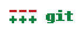

Bonjour ! Dans ce tutoriel, je vous propose d'apprendre à mettre en place un hébergement de dépôts Git sur votre serveur GNU/Linux avec l'outil gitosis.
Si vous ne connaissez pas Git, on est bien d'accord qu'il ne sert à rien d'héberger des dépôts, non ? :-° Dans cette partie, je vais vous présenter l'outil lui-même, puis des alternatives.
Git, kézako ?

Git est un gestionnaire de versions décentralisé, puissant et libre créé par Linus Torvalds, créateur du noyau Linux. Mais c'est quoi, un gestionnaire de versions ?! Pour cela, je vous renvoie à Wikipédia qui produira une explication plus claire que la mienne :
Citation : Wikipédia (fr)
Un logiciel de gestion de versions agit sur une arborescence de fichiers afin de conserver toutes les versions des fichiers, ainsi que les différences entre les fichiers. Ce système permet par exemple de mutualiser un développement. Un groupe de développeurs autour d'un même développement se servira de l'outil pour stocker toute évolution du code source. Le système gère les mises à jour des sources pour chaque développeur, conserve une trace de chaque changement. Ceux-ci sont, en bonne utilisation, chaque fois accompagnés d'un commentaire. Le système travaille par fusion de copies locale et distante, et non par écrasement de la version distante par la version locale. Ainsi, deux développeurs travaillant de concert sur une même source, les changements du premier à soumettre son travail ne seront pas perdus lorsque le second, qui a donc travaillé sur une version non encore modifiée par le premier, renvoie ses modifications.
Pour résumer, c'est un système permettant de travailler par versions d'un même projet, et ainsi conserver toutes les modifications apportées aux fichiers entre les versions. C'est vraiment pratique pour travailler à plusieurs.
Mais de ces gestionnaires de versions, il en existe plusieurs. Je vais donc vous présenter quelques alternatives célèbres.
Git, seul au monde ? Non !
Subversion
Une des alternatives parmi les plus connues est bien sûr Subversion (abrégé en SVN). C'est aussi un gestionnaire de dépôts, mais lui est centralisé. Voici une liste de liens où vous pourrez apprendre à utiliser cet outil :
Un autre gestionnaire, bien que moins connu, puissant, décentralisé, et ressemblant fortement à Git sur la syntaxe des commandes (il a d'ailleurs été publié pour la première fois quelques jours après le début du développement de Git), voilà ce qu'est Mercurial. Pour apprendre, je n'ai pas pu trouver beaucoup de liens comme pour SVN, mais il reste toujours Wikipédia pour avoir une liste des commandes : Mercurial sur Wikipédia (fr).
Petit mot avant de commencer
Ce tutoriel ne portant pas sur Git mais sur l'hébergement de dépôts, je ne peux pas tout expliquer sur ce dernier. Pour suivre ce tutoriel il est donc nécessaire de savoir récupérer un dépôt et le commiter/pusher. Si vous ne savez pas faire cela, j'ai justement un petit lien pour vous : le Git Community Book, traduit de l'anglais (ici) au français : http://alexgirard.com/git-book/.
Vous êtes décidés à faire votre dépôt personnel ? Alors allons-y, installons gitosis !
Pour les utilisateurs d'ArchLinux, il suffira d'installer le paquet aur/gitosis-git avec yaourt, qui fait automatiquement ce qui va suivre. Vous pouvez donc passer directement à la partie suivante.
Pour les utilisateurs de distributions Linux "Debian-like" avec aptitude, le paquet gitosis est également dans les dépôts. Il suffit de l'installer et passer à la partie suivante.
Pour commencer, il va falloir récupérer les sources dans le dépôt Git de gitosis (comment ça, c'est un comble ? :D ) :
git clone git://eagain.net/gitosis.git
Quand vous aurez la copie du dépôt en local (c'est-à-dire que la commande a fini son exécution sans afficher d'erreur), vous pouvez utiliser le script python d'installation de cette façon :
cd gitosis
python setup.py install
En cas d'erreur, veuillez vous reporter à la FAQ en partie annexe.
Tout d'abord, il va falloir créer un utilisateur nommé « git ». Il aura le plein pouvoir sur les dépôts, les ayant dans son répertoire home. Pour ce faire, nous allons utiliser la commande useradd :
# useradd -G git -d /home/git -s /bin/bash -m git
Pour pouvoir communiquer avec le serveur il faut que vous ayez une clé publique SSH. Il vous faut donc en générer une sur votre ordinateur local (pas sur le serveur) :
ssh-keygen -t rsa
Cette commande va créer une paire de clé dans votre répertoire .ssh lui-même dans votre répertoire personnel ($HOME). La clé privée est contenue dans le fichier id_rsa par défaut et la clé publique dans le fichier id_rsa.pub. Copiez la clé publique (attention à ne pas mettre la clé privée) dans un fichier temporaire tel que « /tmp/cle.pub » cette fois-ci sur le serveur.
Nous allons ensuite, en tant que root, exécuter ces commandes :
sudo -H -u git gitosis-init < /tmp/cle.pub
La commande sudo, comme vous le savez, nous permet d'exécuter une action sous une autre identité, qui est par défaut root. Dans ce cas, nous allons exécuter en tant que git, mais en plus, nous allons exécuter dans le home de ce dernier. La commande gitosis-init va initialiser le dépôt en ajoutant l'utilisateur de la clé publique comme commiter du dépôt contenant la configuration.
En cas de succès, vous devriez obtenir un résultat comme celui-ci :
Initialized empty Git repository in ./
Initialized empty Git repository in ./
(Oui, deux fois !)
Et si vous affichez le contenu du home de git, comme par magie, il y a tout plein de fichiers ! :D
Maintenant, nous allons changer les droits d'un fichier. J'ai en effet quelquefois remarqué qu'il ne se modifiait pas à cause de problèmes de droits. Pour ce faire, nous allons exécuter cette commande :
Ceci étant fait, j'ai l'honneur de vous annoncer que votre serveur Git est prêt à l'emploi, et qu'il ne reste plus qu'à faire vos dépôts et ajouter vos utilisateurs ! :D
Désormais, toute la configuration se fera sur votre ordinateur, via le dépôt que nous allons importer tout de suite :
git clone git@[adresse du serveur]:gitosis-admin.git
cd gitosis-admin.git
Si nous affichons le contenu du dépôt, nous verrons un fichier et un répertoire :
gitosis.conf : il contient tout ce qui concerne les droits des utilisateurs (les dépôts auxquels ils peuvent accéder) ;
keydir/ : répertoire comptant toutes les clés publiques de vos utilisateurs. La partie précédant l'extension dans le nom du fichier sera le nom d'utilisateur utilisé dans le fichier de configuration.
Pour créer un utilisateur, il vous faut acquérir la clé publique SSH du nouvel utilisateur, que vous enregistrerez dans le dossier keydir/ du dépôt gitosis-admin, sous le nom de « [pseudo].pub ». Ensuite, vous pourrez modifier le fichier de configuration pour ajouter le membre dans un dépôt, en ajoutant la partie [pseudo] dans une des lignes « members ».
Il vous faudra ensuite faire un commit du dépôt pour que vos modifications soient prises en compte. Il faudra faire un git add des fichiers ajoutés/modifiés, puis commiter :
git commit -a -m "Ajout de l'utilisateur [foo]"
git push
Maintenant, la chose la plus utile de tout ce que l'on a fait dans le tutoriel : ajouter un dépôt ! :-° Pour ce faire, il faut modifier le fichier de configuration en ajoutant un bloc ressemblant à celui-là :
[repo NOM_PROJET]
description = DESCRIPTION
owner = NOM
NOM_PROJET est le nom du projet que vous voulez créer. DESCRIPTION est une courte description du projet NOM est le nom du propriétaire de dépôt.
Pour ajouter des utilisateurs dans la modification du dépôt, il faut soit créer un nouveau groupe, soit ajouter le dépôt au droit d'écriture d'un groupe déjà existant.
Créer un groupe d'utilisateurs
La syntaxe est simple :
[group NOM_GROUPE]
writable=
members=
NOM_GROUPE est le nom du groupe. writable est la liste des dépôts que peuvent modifier les membres du groupe. members est la liste des membres du groupe.
Pour ajouter un dépôt/membre dans un groupe, il suffit d'ajouter son nom à la liste en séparant chaque dépôt/membre par un espace.
Une fois les groupes et dépôts mis à jour, il suffit de faire un push pour envoyer les modifications. Seulement pour les nouveaux dépôts, ils n'ont pas été créés sur le serveur. Il est donc nécessaire de l'initialiser. Pour cela, il faut créer un nouveau projet en local et l'envoyer sur le serveur avec un push une fois de plus.
NOM_PROJET est le nom du projet que vous avez créé dans vos fichiers de configuration auparavant. NOM_SERVEUR est le FQDN (Fully Qualified Domain Name) ou l'ip de votre serveur.
Vous pouvez bien sûr créer des fichiers avant de faire le push. Après cela, le dépôt est réellement créé sur le serveur.
Dans cette partie, je vais vous parler de choses plus poussées, que l'on n'utilise pas à chaque fois que l'on fait un dépôt Git avec gitosis, il s'agit des hooks. Mais qu'est-ce donc, cet animal ? Nous allons commencer par cela avant de voir comment on peut les mettre en place. :) Il est nécessaire de savoir faire des scripts shell pour suivre cette partie.
Un... quoi ?
Un hook, qu'est-ce donc en informatique ? Eh bien, ça permet à l'utilisateur d'un logiciel d'en personnaliser le fonctionnement en lui faisant exécuter des actions supplémentaires à des moments déterminés. Gitosis prévoit justement une panoplie complète de hooks pour réaliser plusieurs choses assez sympathiques dont je donnerai quelques exemples dans la partie pratique. :) Par défaut, avec notre gitosis adoré, les fichiers des hooks sont remplis d'exemples et sont désactivés.
Avec gitosis, les hooks se trouvent dans le home de l'utilisateur git. Par exemple, pour votre dépôt "repo", les hooks seront dans /home/git/repositories/repo.git/hooks/ (les parties pouvant varier selon la façon dont vous avez configuré gitosis sont en rouge). Avant de faire un hook, nous allons voir les deux hooks souvent utilisés dans la pratique, ainsi que leur fonction :
Nom
Fonction
post-commit
Il est appelé quand un commit a été effectué.
pre-commit
Appelé avant un commit, il a le pouvoir de l'arrêter si le script retourne une valeur différente de zéro.
Péchons le poisson !
Pour explication du titre, en anglais, hook signifie crochet ou hameçon. :-°
Bon : maintenant, on sait ce qu'est un hook, on sait qu'il y en a avec gitosis. Hmm, ma foi, je pense qu'on est prêt à commencer ! :D J'ai pensé que la meilleure façon d'apprendre était de générer un exemple codé au fur et à mesure, ainsi qu'un petit exercice. Pour mon exemple, je travaillerai sur le fichier "post-commit" (tandis que l'exercice portera sur l'autre fichier dont je vous ai parlé, "pre-commit"). :)
Exemple
Comme exemple, je vous propose tout simplement un dépôt qui, quand il reçoit une nouvelle révision, fait automatiquement une mise à jour sur un site quelconque. Inconvénient : il faut que le site soit hébergé sur le même serveur. Avantage : coder devient plus confortable.
Comment faire ? Tout d'abord, on va aller dans le répertoire qui va accueillir votre site (public_html, par exemple ;) ) et prendre le dépôt :
Il faut ensuite activer le hook en renommant le fichier post-commit.sample en post-commit et lui donner les droits d'exécution (chmod +x post-commit) ! Voilà : quand quelqu'un fera un commit, le script sera exécuté, et la moitié du travail est effectuée ! :D
Pour finir notre exemple, il vous suffit de réaliser le contenu du fichier :
#!/bin/bash
chemin="/chemin/de/notre/repo.git/" # Chez moi, /home/git/public_html/
avant=`pwd`
cd "$chemin"
git pull
cd "$avant"
Attention aux problèmes de droits !
Et voilà, vous avez un dépôt qui s'auto-update à chaque commit, donc un site qui se modifie par Git ! :)
Et voilà, c'est fini ! Bon gitage ! ( :-° ) toki pona